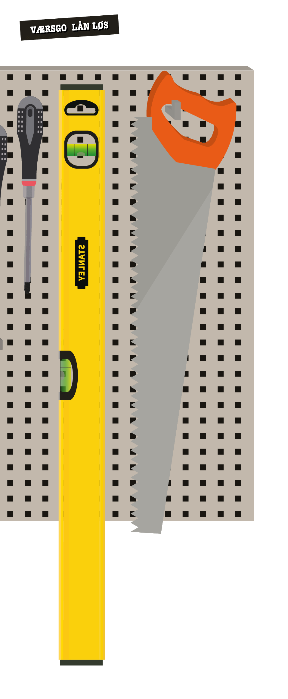
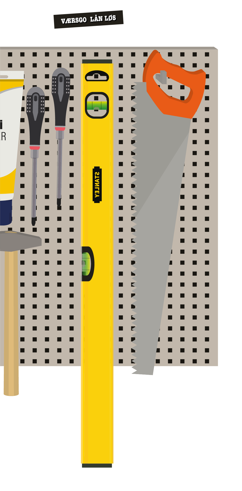
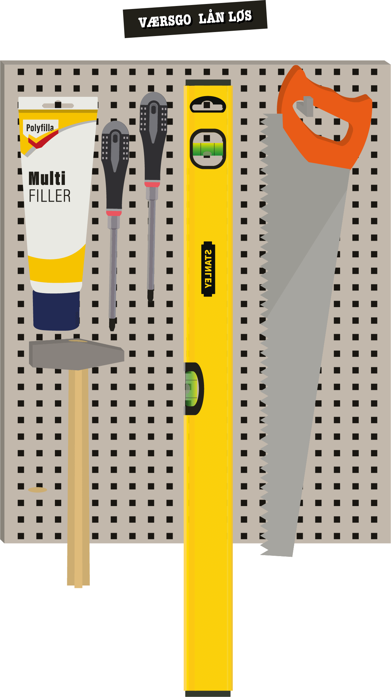
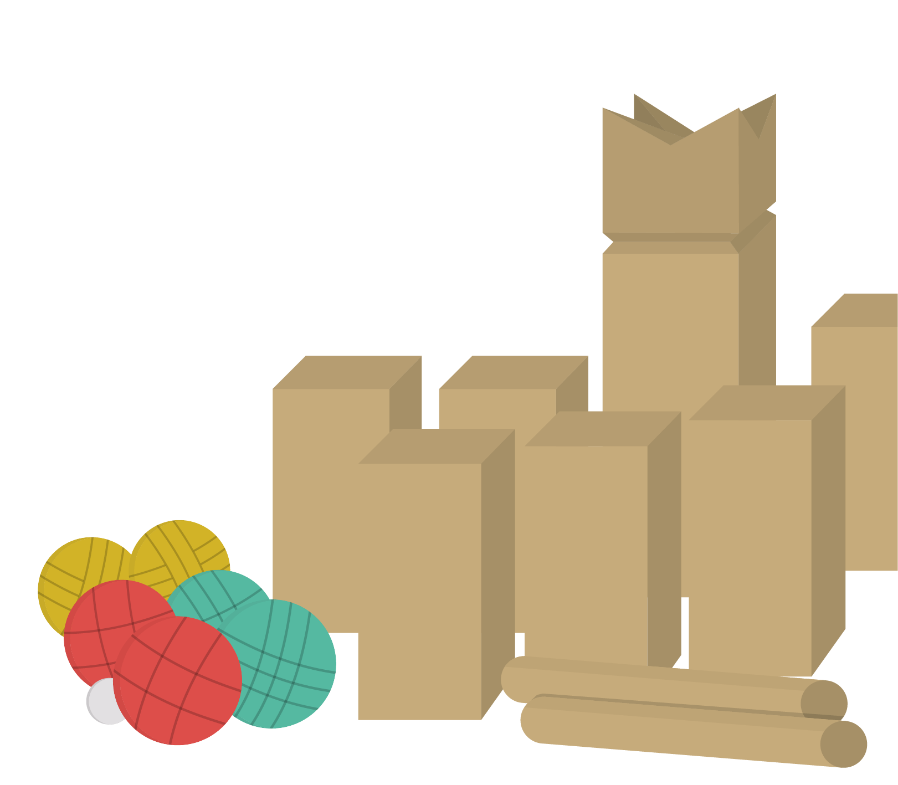
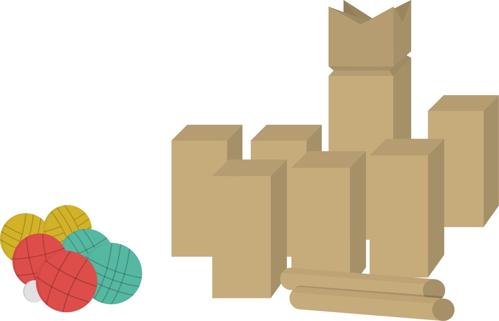
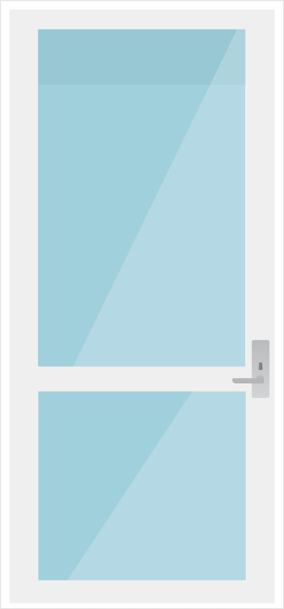

KIOSKEN
I vores Kiosk finder du lidt af hvert, men særligt er der fokus på at vække dine barndomsminder. Savner du måske et Jenka tyggegummi, rustne søm eller den næsten ulovlige lakridspibe? Der findes masser til den søde tand, men udvalget byder også på specialiteter, som ikke kan findes i dit alm. supermarked.
Sortimentet på hylderne i vores kiosk variere hele tiden. Men vi garantere at der nok skal være noget til enhvers smag. Kig ind forbi vores hyggelige kiosk, den er åben for både de handlende og for os der bare snupper et nostalgitrip på vejen.
BOTTLESHOP



DEN GODE NABO
Mangler du pludselig en hammer, eller måske endda en boremaskine? Så kig ind forbi din Nabokiosk. Vi låner gerne ud til alle vores søde naboer. Vi gemmer på lidt af hvert, og du er altid velkommen til at spørge de ansatte, hvis du ikke kan se det du skulle mangle.
Til de hyggelige sommeraftener er du også velkommen til at låne petanque eller nogle af vores andre udendørs spil. Hos os skal du må du låne løs, og bare rolig, det er ganske gratis.



BAG NABO KIOSK
Nabokiosk midt på Ingerslevs Plads, ønsker at genskabe det gode naboskab i byen. Vi er en kiosk, kaffebar, spisested og bootleshop. Men vigtigst af alt, et samlingssted for alle aarhusianer. Her er noget til enhver person, til enhver pris. På hylderne finder du fredagsslik der vækker nostalgien i 90’er barnet, niche-vine, kolonial, specialøl, livsstils- og designvarer samt en masse andet. Her vejer det sociale højt, så kom forbi din nabo og oplev den gode stemning.
Vi er tre venner som alle kommer fra området, men vi syntes her manglede et samlingssted i dette område, og så håbede vi at kunne trække det gode naboskab, vi kender fra forstæderne, tilbage til midtbyen